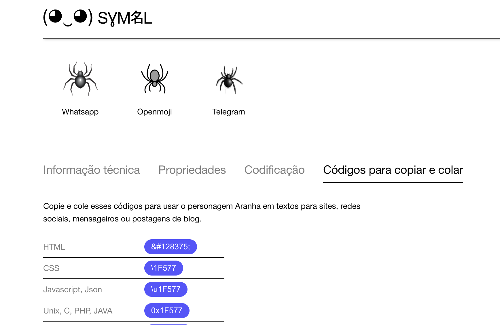
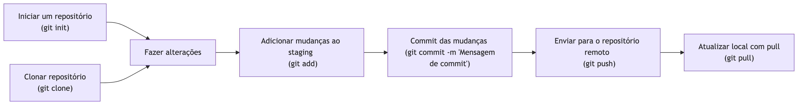

Em matemática e ciência da computação, um algoritmo é uma sequência finita de ações executáveis que visam obter uma solução para um determinado tipo de problema.
O conceito de algoritmo é frequentemente ilustrado pelo exemplo de uma receita culinária, embora muitos algoritmos sejam mais complexos. Eles podem repetir passos (fazer iterações) ou necessitar de decisões (tais como comparações ou lógica) até que a tarefa seja completada.
Um algoritmo não representa, necessariamente, um programa de computador, e sim os passos necessários para realizar uma tarefa.
1. Definição do problema
2. Projetar a solução (algorítmo)
3. Codificar a solução (programar em uma linguagem)
4. Testar o programa
\[1, 1, 2, 3, 5, 8, 13,\dots\]
\[ \begin{align} F(n)=F(n-1)+F(n-2), \\ \text{com}\; n \geq 1\;\text{e}\; F(1) = F(2) = 1 \end{align} \]
python --version no terminal.Depois de instalar ambos, você pode usar o VSCode para escrever e rodar código Python diretamente.
pip um gerenciador de pacotes
# Instalar 1 ou + pacotes
pip install pandas folium
# Instalar um conjunto de pacotes a partir do arquivo requirements.txt
pip install -r requirements.txt
# Listar todos os pacotes instalados
pip freeze
Para utlizar as funções de outros pacotes é necessário carregar os módulos com import:
Em programação, variáveis são utilizadas para armazenar valores. Então
x = 1, a variávelxarmazena o valor 1
a1velocidadevelocidade90salário_médio_bsalário médio (utilizando espaço)1a (começando com números)
a, b e c
b maior do que a
a menor do que b
c é menor ou igual a b
c é igual a b
a é diferente de b
TrueTrueTrueTrueTrueVerificando o tipo
FalseTrueTrueFalseFalseFalseTrueTrueTrueFalseExpressões lógicas
Variáveis do tipo string armazenam cadeias de caracteres como nomes e textos em geral.
O tamanho de uma string pode ser obtido utilizando-se a função len:
A função input é utilizada para solicitar dados do usuário. Ela recebe um parâmetro, que é a mensagem a ser exibida, e retorna o valor digitado pelo usuário.
Produzindo a seguinte saída na tela:
Digite um número: 5
5
Faça um programa que calcule o aumento de um salário. Ele deve solicitar o valor do salário e a porcentagem do aumento. Exiba o valor do salário, percentual de aumento e do novo salário.
# Inputs
salario = float(input("Digite seu salário: "))
percentual = float(input("Digite o percentual de aumento: "))
# Cálculo
novo_salario = salario * (1 + percentual/100)
# Resultado
print(f"O meu salário é R${salario:.2f}, o percentual de aumento foi {percentual:.1f}% e o novo salário será de R${novo_salario:.2f}")float
As condições servem para selecionar quando uma parte do programa deve ser ativada e quando deve ser simplesmente ignorada
ifelseelifInserindo mais condições
Faça um programa que calcule o aumento de um salário. Ele deve solicitar o valor do salário e o nível do cargo. Cargo junior terá um aumento de 10%, pleno de 20% e senior 30%. Mostre uma saída com o salário, o cargo e o novo salário.
salario = float(input("Digite seu salário: "))
cargo = input("Digite o nível do cargo: ")
if cargo == "junior":
novo_salario = salario * 1.1
elif cargo == "pleno":
novo_salario = salario * 1.2
elif cargo == "senior":
novo_salario = salario * 1.3
else:
print("Cargo não identificado!")
print(f"O meu salário é R${salario:.2f}, mas com o meu cargo {cargo}, o novo salário será de R${novo_salario:.2f}")
O exercício anterior considerando que se o profissional no cargo senior tiver filho o salário terá um acréscimo de R$ 500
salario = float(input("Digite seu salário: "))
cargo = input("Digite o nível do cargo: ")
if cargo == "junior":
novo_salario = salario * 1.1
elif cargo == "pleno":
novo_salario = salario * 1.2
elif cargo == "senior":
novo_salario = salario * 1.3
filhos = input("Você tem filhos? ")
if filhos == "sim":
novo_salario += 500
else:
print("Cargo não identificado!")
print(f"O meu salário é R${salario:.2f}, mas com o meu cargo {cargo}, o novo salário será de R${novo_salario:.2f}")if aninhado
Seria uma forma mais simplificada de utilizar condições.
Seria uma outra forma de aplicar condições no código. Nós reescreveremos o problema do aumento de salário.
salario = float(input("Digite seu salário: "))
cargo = input("Digite o nível do cargo: ")
match cargo:
case "junior":
novo_salario = salario * 1.1
case "pleno":
novo_salario = salario * 1.2
case "senior":
novo_salario = salario * 1.3
case _:
print("Cargo não identificado!")
novo_salario = None
if novo_salario is not None:
print(f"O meu salário é R${salario:.2f}, mas com o meu cargo {cargo}, o novo salário será de R${novo_salario:.2f}")São utilizadas para executar a mesma parte de um programa várias vezes
while
Imprimir números de 1 a 5
while
Construa um programa que solicite para qual número deve ser calculada a tabuada de multiplicação
n = int(input("Tabuada de: "))
x = 0
while x <= 10:
print(f"{n} {chr(215)} {x} = {n * x}")
x = x + 1chr mostra um caractere unicode
whilePrograma para calcular a soma de 10 números inseridos
n = 1
soma = 0
while n <= 10:
x = int(input(f"Digite o {n} número: "))
soma += x
n += 1
print(f"Soma: {soma}")
whilePrograma para calcular a média de 10 números inseridos
Equivalências:
x += 1 \(\Longleftrightarrow\) x = x + 1y -= 1 \(\Longleftrightarrow\) y = y - 1c *= 1 \(\Longleftrightarrow\) c = c * 2d /= 1 \(\Longleftrightarrow\) d = d / 1e **= 1 \(\Longleftrightarrow\) e = e ** 1f //= 1 \(\Longleftrightarrow\) f = f // 1
whiles = 0
while True:
v = int(input("Digite um número a somar ou 0 para sair: "))
if v == 0:
break
s += v
print(s)while
Para continuar uma repetição existe a instrução continue
whileimport os
import time
print("\033[?25l", end="")
x = 1
tamanho, _ = os.get_terminal_size()
tamanho = tamanho - 5
while x <= tamanho - 5:
bar = chr(9608) * x + f" {x * 100 / tamanho:.0f}"
print(bar)
time.sleep(.1)
os.system('cls')
x = x + 1
███████████████████████████████████████████████████ 76%
Como apresentando no último exemplo, no python, é possível incluir símbolos utilizando a função chr.
[(9608, '█'),
(9816, '♘'),
(128187, '💻'),
(128665, '🚙'),
(129315, '🤣'),
(128099, '👣'),
(8721, '∑'),
(128375, '🕷')]Uma lista poderá ser encontrada aqui https://symbl.cc/ com os símbolos e códigos. O código que deverá ser utilizado é a parte numérica do HTML (🕷)

A lista é representada por [], seguem alguns exemplos:
[1, 2, 3, 4]['a', 'b', 'c']['a', 5, True][[1, 'a'], [True, 2.6]]
Podemos extrair elementos da lista utilizando []:
0
2
-1
3:5
485[1, 9]
while e dar print de cada valor
Eu poderia substituir 6 por len(notas)
forTemos a opção de utilizar for para percorrer uma lista e dar print de cada valor
L e salvo na variável K
K é cópia de L, qualquer alteração em L produz uma alteração em K
['a', 'b', 'c', 'r', 'e']Uma outra forma de cópia seria utilizando o comando [:]
Métodos são semanticamente o mesmo que funções, mas há duas diferenças sintáticas: Os métodos são definidos dentro de uma definição de classe. Dois métodos para inserir novos dados em uma lista são:
append insere um elemento em uma listaextend insere vários elementos em uma lista['a', 'b', 'c', 'd', 'e', 'f', 'g', 'h']Se utilizar append para inserir multiplos itens ele será inserido como um único item
Criar uma programa que adicione repetidamente números em uma lista, mas que ao digitar o número 0 o programa é interrompido
Criar uma programa que verifique quantas letras “a” aparecem na lista
Crie um programa que calcule o valor máximo de uma lista
Criar uma programa que solicite uma frase e a letra que gostaria que fosse contada
from unidecode import unidecode
texto = input("Digite uma frase: ")
letra = input("Qual letra gostaria de contar: ")
soma = 0
for i in texto:
if unidecode(i.lower()) == letra:
soma += 1
print(f"A quantidade de '{letra}' nesta frase é de: {soma}")
unidecodepip3 install unidecode
O dicionário é definido por {} e estruturado sempre com uma chave 'a' e um valor 1, sendo separados por “:”
Para obter um valor podemos usar [] com uma chave x['a'] para poder retornar o valor associado a chave
O dicionário tem dois métodos utilizados para retornar uma lista de chaves e valores
Para adicionar uma nova chave e valor
É possível adicionar outras estruturas de dados como valores no dicionário
tabela = {"Alface": 5.00,
"Batata": 4.55,
"Tomate": 9.80,
"Feijão": 7.30}
valor_total = 0
while True:
produto = input("Qual o produto? ").capitalize()
if produto == "Sair":
print("Bye!")
break
quantidade = int(input("Quantidade: "))
valor_produto = tabela[produto] * quantidade
valor_total = valor_total + valor_produto
print(f"Valor total das compras foi de: R${valor_total:.2f}")
As tuplas são similares às listas, mas com a diferença de serem imutáveis, ou seja, não é possível substituir um elemento.
3
Contudo podemos concatenar tuplas
Um tupla com somente um elemento deve ser incluída a ,
Os conjuntos trazem a mesma ideia dos conjuntos da matemática. Um detalhe importante é se elementos repetidos forem incluidos eles são removidos automaticamente.
Para adicionar um elemento
Uma função em python é iniciada com def, deve se incluir um nome_função, incluir argumento e uma declaração return para retornar o resultado
Para utilizar a função
Função para verificar se o número é par
Função para dizer se é par ou ímpar
Calcular a soma de elementos de uma lista
def somar_lista(lista):
soma = 0
for e in lista:
soma = soma + e
return soma
somar_lista([1, 2, 3, 4])10Calcular a média de elementos de uma lista
Criar uma função que retorna o aumento de salário. Os argumentos necessários para calcular este aumento de salário são o salário atual e o cargo que o profissional ocupa. Contudo se o cargo é junior o aumento será de de 10%, se for pleno o aumento será de 20% e se for senior o aumento será de 30%.
Aplicação da função
def tic_tac_toe():
data = {}
def move(data, pos):
pos = data.get(pos, pos)
if pos == 1:
return chr(215)
elif pos == 0:
return chr(9711)
else:
return pos
def show_board():
print(f' {move(data, "1")} | {move(data, "2")} | {move(data, "3")} ')
print("-" * 11)
print(f' {move(data, "4")} | {move(data, "5")} | {move(data, "6")} ')
print("-" * 11)
print(f' {move(data, "7")} | {move(data, "8")} | {move(data, "9")} ')
print("\n")
def winner_checker():
win_pos = ["123", "456", "789", "147", "258", "369", "159", "357"]
win_checkers = [[data.get(i) for i in j] for j in win_pos]
check = True in [(set(i) == {1}) | (set(i) == {0}) for i in win_checkers]
return check
while True:
show_board()
player1 = input(f"Select a position (player {chr(215)}): ")
print("\n")
data[player1] = 1
if winner_checker():
print(f"Player {chr(215)} Won!\n")
show_board()
break
show_board()
player2 = input(f"Select a position (player {chr(9711)}): ")
print("\n")
data[player2] = 0
if winner_checker():
print(f"Player {chr(9711)} Won!\n")
show_board()
break
Mesmo que um comando ou expressão estejam sintaticamente corretos, talvez ocorra um erro na hora de sua execução. Erros detectados durante a execução são chamados exceções
--------------------------------------------------------------------------- NameError Traceback (most recent call last) Cell In[138], line 1 ----> 1 print(y) NameError: name 'y' is not defined
Podemos tratar as exceções utilizando o bloco try/except
É possível também concatenar um texto padrão com o texto de erro
É possível também utilizar mais de uma exceção para direcionar diferentes tipos de erros
Escreva um programa que pergunte a distância que um passageiro deseja percorrer em km. Calcule o preço da passagem, cobrando R$ 0.50 por km para viagens de até 200 km, R$ 0.45 para viagens entre 200 e 400 km e para viagens mais longas será cobrado R$ 0.35 por km. O programa só deve ser encerrado quando o usuário escrever sair.
while True:
dist = input("Digite a distância: ")
try:
if dist.capitalize() == "Sair":
print("Bye!")
break
else:
dist = float(dist)
if dist <= 200:
preco = dist * 0.5
elif (dist > 200) & (dist <= 400):
preco = dist * 0.45
elif dist > 400:
preco = dist * 0.35
print(f"O preço ficou em R${preco:.2f}")
except:
print("Valor inválido")Git é um sistema de controle de versão que ajuda a gerenciar e acompanhar mudanças no seu código, enquanto o GitHub é uma plataforma online onde você pode hospedar seus repositórios Git, colaborar com outros desenvolvedores e compartilhar seus projetos de forma fácil e segura. Ambos são ferramentas essenciais para quem trabalha com desenvolvimento de software!

O commit semântico é uma prática de escrever mensagens de commit de forma clara e padronizada, usando um formato que indica o tipo de mudança feita (como correção, adição ou remoção) e uma descrição breve.
feat: add hat wobble
^--^ ^------------^
| |
| +-> Resumo no tempo presente.
|
+-------> Tipo: chore (tarefas), docs (documentação), feat (recurso), fix (correção), refactor (refatoração), style (estilo), ou test (teste).
feat: (new feature for the user, not a new feature for build script)fix: (bug fix for the user, not a fix to a build script)docs: (changes to the documentation)style: (formatting, missing semi colons, etc; no production code change)refactor: (refactoring production code, eg. renaming a variable)test: (adding missing tests, refactoring tests; no production code change)chore: (updating grunt tasks etc; no production code change)
C = []
E = []
U = []
P = []
c = 13
e = 13
u = 13
p = 13
cartas = input()
for i in range(0, len(cartas), 3):
carta = cartas[i:i + 3]
if carta[-1] == "C":
if carta not in C and c != "erro":
C.append(carta)
c -= 1
else:
c = "erro"
elif carta[-1] == "E":
if carta not in E and e != "erro":
E.append(carta)
e -= 1
else:
e = "erro"
elif carta[-1] == "U":
if carta not in U and u != "erro":
U.append(carta)
u -= 1
else:
u = "erro"
elif carta[-1] == "P":
if carta not in P and p != "erro":
P.append(carta)
p -= 1
else:
p = "erro"
print(c)
print(e)
print(u)
print(p)
entrada = []
dupla_a = []
dupla_b = []
diffs = []
for i in range(0, 4):
entrada.append(int(input()))
for i, j in enumerate(entrada):
for k, l in enumerate(entrada):
if i > k:
dupla_a.append(j + l)
dupla_b.append(sum([entrada[s] for s in list(set(range(4)) - set([i, k]))]))
diffs = [abs(i[0] - i[1]) for i in zip(dupla_a, dupla_b)]
print(min(diffs))
#| '!! shinylive warning !!': |
#| shinylive does not work in self-contained HTML documents.
#| Please set `embed-resources: false` in your metadata.
#| standalone: true
#| components: [editor, viewer]
from shiny import *
app_ui = ui.page_fluid(
ui.input_slider("n", "N", 0, 100, 40),
ui.output_text_verbatim("txt"),
)
def server(input, output, session):
@output
@render.text
def txt():
return f"The value of n*2 is {input.n() * 2}"
app = App(app_ui, server)
#| '!! shinylive warning !!': |
#| shinylive does not work in self-contained HTML documents.
#| Please set `embed-resources: false` in your metadata.
#| standalone: true
#| components: [editor, viewer]
from shiny import reactive, render
from shiny.express import input, ui
ui.input_action_button("action_button", "Action")
@render.text()
def counter():
return f"{input.action_button()}"
#| '!! shinylive warning !!': |
#| shinylive does not work in self-contained HTML documents.
#| Please set `embed-resources: false` in your metadata.
#| standalone: true
#| components: [editor, viewer]
from shiny.express import input, render, ui
ui.input_checkbox_group(
"checkbox_group",
"Checkbox group",
{
"a": "A",
"b": "B",
"c": "C",
},
)
@render.text
def value():
return ", ".join(input.checkbox_group())
#| '!! shinylive warning !!': |
#| shinylive does not work in self-contained HTML documents.
#| Please set `embed-resources: false` in your metadata.
#| standalone: true
#| components: [editor, viewer]
from shiny.express import input, render, ui
ui.input_date("date", "Date")
@render.text
def value():
return input.date()
#| '!! shinylive warning !!': |
#| shinylive does not work in self-contained HTML documents.
#| Please set `embed-resources: false` in your metadata.
#| standalone: true
#| components: [editor, viewer]
from shiny.express import ui, input, render
with ui.sidebar(bg="#f8f8f8"):
ui.input_select(
"select",
"Select",
{
"Olá": "Olá",
"Hello": "Hello",
"Hallo": "Hallo",
},
)
ui.input_text("text", "Text input", "Enter name...")
@render.text
def value():
return f"{input.select()} {input.text()}!"
Para executar localmente